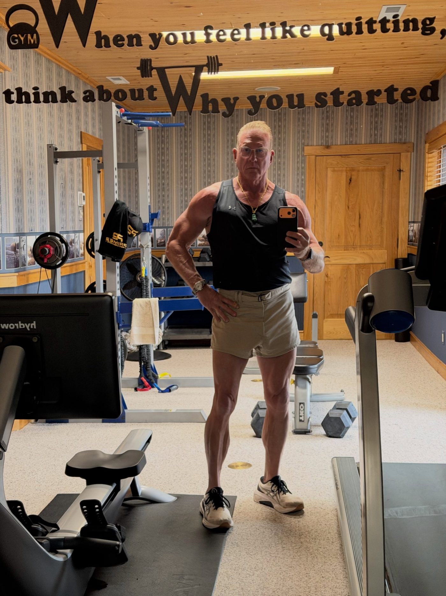
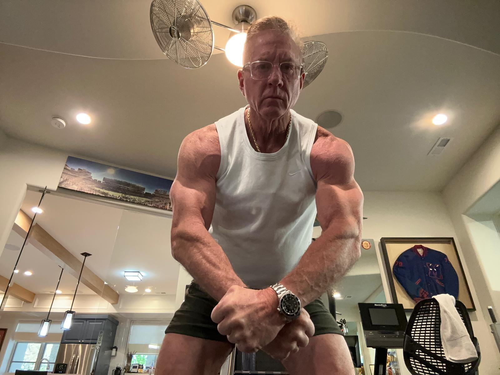
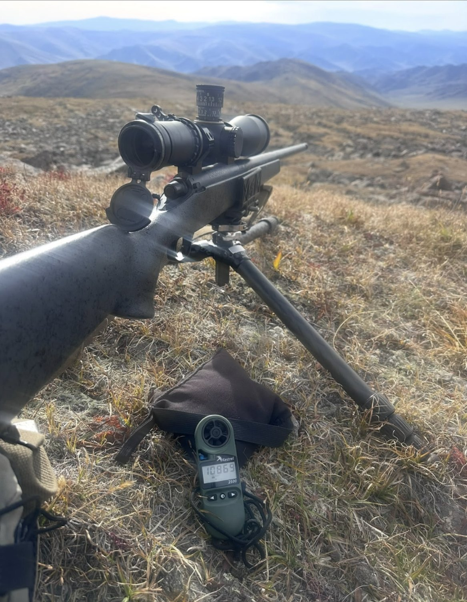
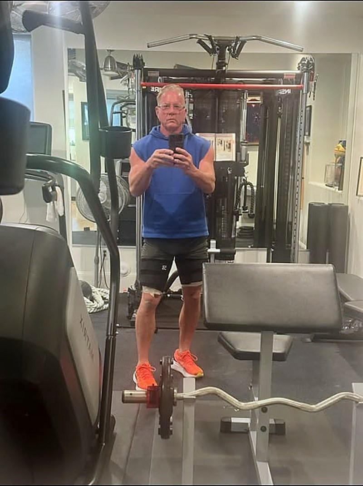
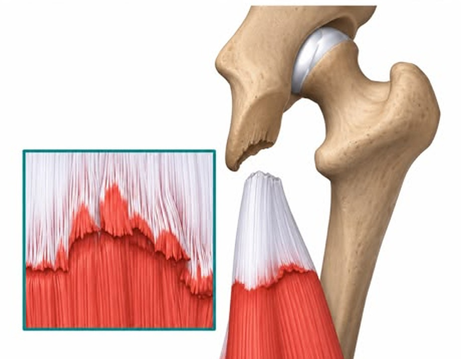

TIM HAUGHT
Reconnaissance Marine · Retired FBI Special Agent · International Security Professional · EntrepreneurA Lifetime of Discipline. A Second Prime. An Unfinished Mission.
A lifelong athlete with fifty years under the weight bar, Tim Haught has spent his life refusing to let circumstances define his capabilities. Today, he’s building Prime2Performance for men 45+ who want to keep training, stay capable, and remain engaged in the lives they’ve built. But the idea didn’t begin in a boardroom. It began with a lifetime of discipline—and a period when Tim Haught could barely walk.

Credibility Is Not A Marketing Claim. It Is A Record.
It Started In Reconnaissance.
Tim Haught began his career as a United States Reconnaissance Marine. Discipline, resilience, and accountability weren’t just ideals; they were part of the job.
He learned to push beyond limitations, stay composed under pressure, and be someone others could depend on. He left the Corps. The standard stayed.

- Name
- Haught, Tim
- Position
- Special Agent
- Grade
- GS‑15
- Status
- Retired
- Habit kept
- Verify everything. Guess nothing.
Then He Carried A Badge.
He carried those principles into his career as an FBI Special Agent, retiring at the GS‑15 level. His work reinforced the importance of accuracy, integrity, evidence, and trust.
That habit never retired. It is why every P2 bag prints every dose of every ingredient, with nothing buried in a blend.
Twelve Years Where Promises Had Consequences.
After the FBI, Tim Haught built and operated a global risk management company through twelve years of war in Iraq and Afghanistan, with operations in twenty-six countries. The responsibilities included security, investigations, medical transportation, and medical case management for injured and deceased U.S. Government contractors.
One of the hardest responsibilities was delivering death benefits to the spouses and children of men who never made it home.
Those experiences deepened his understanding of what it means to be present for the people who depend on you.


Then Both Hamstrings Went.
Despite decades of consistent training, Tim Haught faced severe shoulder and rotator cuff injuries, followed by complete ruptures of both proximal hamstring tendons. After a lifetime of strength and physical independence, he could barely walk. At his lowest point, he couldn’t perform a five-pound leg curl.
With both legs wrapped, he struggled into the gym, determined to preserve whatever strength he could. The pain was agonizing, and the road ahead was uncertain.
For a man who had spent his life overcoming challenges, this was a different kind of battle.

Grade 3 — severe. A complete rupture: the tendon tears away from its attachment on the pelvis. Tim Haught tore both.
He Treated Recovery Like An Operation.
Tim Haught approached recovery with the same discipline he had brought to his professional life. He focused on training, nutrition, and recovery, while immersing himself in research and examining the supplement market.
He wasn’t chasing youth or looking for a miracle. He wanted a practical, sustainable way to support strength, energy, and physical capability in the years ahead. After three years of development, that work became P2 Core, P2 Fuel, P2 Zero‑Six and P2 Repair.
Hunting At 11,000 Feet.
Eleven months after tearing both hamstrings, Tim Haught was hunting in the mountains of Mongolia at 11,000 feet. He had discovered his passion for sheep hunting at 57, and he was now pursuing new challenges—not simply returning to an old lifestyle.
His journey wasn’t about turning back the clock. It was about refusing to let the clock determine what came next.
Built For The Full 24 Hours.
Tim Haught set out to build Prime2Performance for men 45+ who want to stay strong, active, and capable throughout the day—not just during a workout. It’s a 24-hour supplement system because nutritional support is more than a 45-minute gym session: morning, pre-training, during training, and nighttime recovery.
The system reflects the approach Tim Haught wanted for himself: clearly disclosed ingredients and amounts, thoughtfully selected formulas, and no proprietary blends or miracle promises.
Prime2Performance grew from real-life challenges, decades of discipline, and the belief that growing older shouldn’t mean giving up the activities and people that make life worth living.
No White Coat On The Label.
“Competitors hire doctors and surgeons. I’ve been the patient, the Marine, the FBI agent, the security professional, and the guy under the weight bar for 50 years.”
“Doctors treat you when you’re injured. Prime2Performance is engineered to support daily strength and recovery.”
“Formulated by a man who uses it every day, not a white coat on a label.”
“Train like you have nothing to prove. Perform like you have nothing to lose™.”
TIM HAUGHT · FOUNDER, PRIME2PERFORMANCE
*These statements have not been evaluated by the Food and Drug Administration. This product is not intended to diagnose, treat, cure, or prevent any disease.
The Record Is On The Bag.
Your First Prime Does Not Have To Be Your Last.
Age is not the end of ambition. Your mission is not over.
TIM HAUGHT · FOUNDER, PRIME2PERFORMANCE